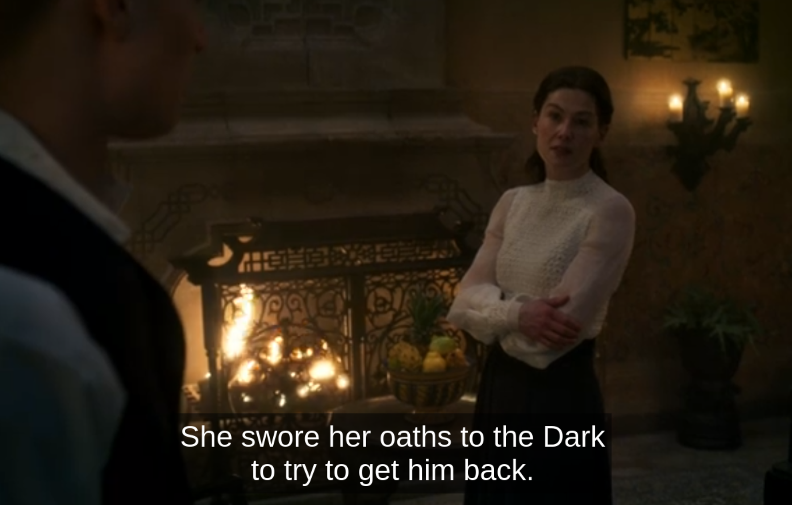

Wokeness and Wheel of Time
September 9, 2023
Drew
Definition of Woke and Woke Ideology
Woke
To be awakened to the systemic oppression and discrimination throughout society’s social, cultural, and political institutions and systems. To be aware of how the functioning of these institutions and systems oppresses marginalized groups both historically and in the present.
To give a couple of examples:
Black people suffer from racism baked into the foundation of the culture and laws of the United States, and this baked in racism impacts their education, how they are treated by the law, career opportunities, etc. White Supremacy is pushed culturally, and dominates through the teaching of history, the movies that are made, the standards of beauty, the stories that are told, the music that is popular.
Women have suffered throughout history, not being allowed to vote, own land, have jobs outside the home, married off to men, and generally viewed as second class citizens. Society, and all cultural, political, societal institutions and structures are patriarchal in nature and designed to oppress women. Women are pressured to fit into a gendered stereotype from birth, which places them in a supporting role to men, pushing them to earn less, focus on having babies and managing a home rather than focusing on a career and being a head of a household.
Woke Ideology
Given the definition of Woke, Woke Ideology is the solutions and the prescriptions designed to compensate and/or correct for the historic and current inequities present in said societal and political structures.
This is where I will expand a little further in my examples, and they can be found throughout society. Woke Ideology sees the inequities and the root causes of these inequities throughout all facets of society, and so the prescriptions are pushed all throughout society.
First example is the news media. News, for years, has been viewed primarily as an institution that reports the facts with as little bias as possible, and let the consumer of the news make a determination on what they believe. While this was not always the case, going back further when news papers were far more ideological, there was a change. Fast forward to today, and new media, regardless of format, is used as a vehicle for political messaging.
In the 1990’s and early 2000’s, local news and national news frequently reported on crimes stories committed by black men. The nightly news was filled with these stories. Eventually, it was determined that this continual reporting of black men as criminals was racist and could drive white people and broader society to fear all black men.
Fast forward to today, and stories like this are far more rare. Is that because the crime went away? Perhaps in part, but it is also true that new media rarely mention that a suspect is black. What stories are covered with national attention are ones where black people are killed by police or white men. What is covered is any story that promotes the belief that white, conservative men are racist and a threat to both black people and the very democratic republic under which we live.
In both instances, the media is pushing stories that paint a narrative. Woke Ideology pushes a prescription that we should not report on certain stories a certain way because it could lead to discrimination against a racial minority, and historically marginalized group; however, it is acceptable and good to do the inverse because white men have privilege in society and this drives equity while also calling attention to a perceived, actual threat to society.
Another example, taking it away from media, suggests that members of the LGBTQIA+ community have been marginalized through a society that is “hetero-normative”. Their sexuality is not normalized throughout society, so educators have begun placing LGBTQIA+ themes and lessons into schools. Whether this is teaching about homosexual sex acts, Gender Ideology, or just having books and drag story hour and performances, this has crept into classrooms across the country.
Children at young ages are taught that they might feel like the opposite gender and that is alright because maybe they really are. Schools will help children transition without parental knowledge and asking for pronouns is normalized.
Sexual education, initially teaching teenagers about the biological reality of procreation and how that functions, are now taught sexual acts for pleasure, including homosexual sex acts. This, as a push to break hetero-normativity, but with what down-stream effects?
We can see this with the discussion of the gender pay gap, and laws being pushed to equalize pay. One prominent example of this is with women’s soccer. The women’s soccer team pushed for equal pay to the men’s team, despite having accepted a contract with higher, guaranteed minimums and benefits. They pushed hard enough and got it, which means that if they split the winnings of the men’s team with the women’s team. Now, the men’s winnings are naturally higher because men’s soccer brings in significantly higher money throughout the year and is far more popular. Additionally, the men’s team is far better at the sport and could easily beat the women’s team, but all this does not matter in the eyes of the women’s players because they have won more championships and are doing the same job. Pushing the levers of the system to force equal pay and outcomes regardless of a differential in ability or outcome of revenue generated.
Now, is anything said about how women are not supporting women’s sports en masse? No. This applies to women’s basketball as well. Why are women not supporting women’s sports like men support men’s sports? Instead, it is put on men for being misogynistic for not supporting women’s sports as a reason for the lower revenue, and structural discrimination against women for the lower pay.
A brief aside: because discrimination against women is also covered through modern feminism, not linking it to Woke Ideology is understandable. I include it because it is all similar and recognize with modern “intersectionality”, these two often cross.
Wheel of Time
I will not attempt to demonstrate all of these principals in action with a modern TV series adaptation of my favorite fantasy series, Wheel of Time. This series encapsulates most aspects and examples I have provided, and will get back to other examples afterward.
The Wheel of Time is a series written by Robert Jordan and was released in the 1990’s and early 2000’s. The main characters were three young men and is a coming of age story with many themes of masculinity, female empowerment, men and women working together to build society, male and female dynamics, and much more.
The television series is an adaptation headed by showrunner Rafe Judkins. Rafe is a self proclaimed feminist man who is also gay. There is nothing wrong with that specifically, but it is this identity which drives many of the decisions to greatly change the tv series from the books. He is quoted as saying with regards to feminism in the series,
“One of the things about the books is that they were probably quite, quite feminist in the ‘90s when they came out, and so I want to stay true to that and make them feel feminist for today,” Judkins says. “I think if we took some of the things that happened in the books and put them on screen today, they would not feel as feminist. There’s a 30-year gap between when those [first books] came out and the [series] end.”1
“Our writing staff and our directorial staff and our producers, they’re all half or more than half women too, so just trying to make sure that we are delivering on the promise of the series from the 90s that it would be quite feminist,” he says.
And on racial diversity,
"The Wheel of Time has always sat as the most diverse fantasy book that came out in its time. I think when you're adapting it to be on television today, we also need to do that in order to honor the books and make this the most diverse fantasy TV show that's been on television before,"
"That's something that's been really important to me the whole way through the process and bringing in all these people from the different parts of our world is letting us build the worlds within the show, too," Judkins continued. "It's exciting when you sit down to dinner with Alvaro Morte (Logain) from Spain and Priyanka Bose (Alanna) from India and Rosamund [Pike] (Moiraine) … everyone comes together in Prague and makes this thing more than it would be without them."2
Based on his own quotes, his background and self-identification, and changes he has already made to the series, one can see how Woke Ideology has impacted this adaptation.
- Amazon hired a gay man who is a self proclaimed feminist to be the showrunner of the series. A person that is totally willing to make changes to insert ideology.
- Women are pushed to the forefront and the story changed to promote a more modern feminist ideology rather than the messages and themes from the original work.
- Homosexual and polyamorous relationships are inserted that were not in the main series.
- The show race swaps multiple characters to create diversity in a series that is already well known for the diversity it already had.
- Male characters are changed from who they were in the books to either highlight toxic masculinity as bad or to show a feminist ideal of a sensitive, subservient masculinity as good.
- Events that were originally given to male characters are instead given to female characters to help driver point two, and female characters are given additional story arches to help increase their prominence.
- Events for male characters are left out while whole new storylines are created to promote the messages the showrunner wants inserted.
I will now go point-by-point to demonstrate each of these points, other than point one, which was already demonstrated through quotes.
Point Two
As seen from the article in the second linked quote,
“Seasoned actor Rosamund Pike will take the lead as the Aes Sedai Moiraine, while lesser-known actors such as Josha Stradowski, Marcus Rutherford and Barney Harris make up part of the Two Rivers group of Rand, Perrin and Mat, respectively.” 2
Moiraine is viewed as the lead character and it has been promoted that this series will be focused more on her point of view.
Right out of the gate, the lore was changed to promote the idea that the Dragon Reborn could be a woman, despite the original Dragon being a man. In the books, it was known that the Dragon would be reborn as a man that could channel, and that was part of what made the prophecy of his rebirth such a scary thing, since men that can channel are doomed to go insane and were responsible for the breaking of the world. By changing this, it opens it up for the savior to be a woman, but changes both the lore from the books and the underlying threat the Dragon’s rebirth carries with it.
Nyneave and Egwene are made Ta’veren, which is a change from the books. While they were important in the books, Ta’veren bend the pattern around them and this designation carries with it certain implications. But because we cannot have women not viewed as equal to men in the story, the change was made.
Entire scenes are made up showing Liandrin defeating a male channeler, Liandrin, Alanna, Moiraine, and other Aes Sadai holding Logain prisoner and ultimately gentling him while having their own internal conflicts.
The first three episodes of season two give the majority of speaking and screen time to Nynaeve, Liandrin, Moiraine, Egwene, Selene/Lanfear, Elayne, and Verin.
 3
3
Point Three
Rafe Judkins took parts of New Spring, a prequel book, and expanded that to be a full blown relationship, including sex scenes, in season one of the show. Moiraine and Siuan Sanche were said to be “pillow friends” in New Spring. While this has been stated to often mean a sexual relationship by Robert Jordan.
"Pillow friends are not just good friends. Oh, they are that, too, but they also get hot and sweaty together and muss up the sheets something fierce. By the way, pillow friends is a term used in the White Tower. The same relationship between men or women elsewhere would be called something else, depending on the country." 4
However, in the main series, which is what is being adapted, Moiraine has a relationship with Thom that is implied, and Siuan with Garyth Bryne. Certainly it can be said that Siuan and Moiraine are more open sexually and former lovers, it was never displayed in the main book series. It is brought into the show series because of Woke Ideology pushing the idea that LGBTQIA relationships are under represented in television, and so changes must be made to the series to show this relationship.
Further, it was mentioned in the books that some green Ajah Aes Sedai have multiple Warders and that they sometimes sleep with them. It was not specifically stated that they have threesomes with them, nor was it mentioned that the Warders were gay for each other. Rafe Judkins shows this clearly happening in season one with Alanna going to sleep with her two Warders, both portrayed as particularly feminine acting, gay men. In episode one of season two, Alanna can again be seen as having a threesome with her Warders.
Because this was not seen directly in the books, inserting it into the series means that new scenes need to be created to show this activity, which means scenes that are in the books have to be cut to make room. This is done because Rafe Judkins is inserting his own Woke Ideology into the series, placing an importance on representing gay and polyamorous relationships in the show based on historic lack of representation in television, as well as historic discrimination against people that engage in this kind of activity.
Point Four
Many of the characters in the Wheel of Time television series are race swapped from what they were in the book. We know this because there are notes on who Robert Jordan envisioned to play the characters if it were to be adapted. This includes main characters such as Perrin, Egwene, and Nyneave.
Let me be clear, I am not completely opposed to race swapping, though I am generally against it. But I point this out as being done due to Woke Ideology. The book series was racially diverse, as already stated by Rafe Judkins; however, it was “important” to make it even more racially diverse, presumably, due to historic under-representation of racial minorities in fantasy televisions shows, particularly as main characters.
Below are some examples of this being done:
[UPDATE]: There is an update that lends credence to what I mentioned here about the race swaps. There is an adaptation in the works on a fantasy book series written by Tomi Adeyemi. The movie will be written and directed by Tomi Adeyemi And Gina Prince-Bythewood, the director of the movie The Woman King.
When I first heard about this movie, I knew at the time that there would be no race swapping going on. This story is based on African culture. It is set in an African setting, with an all black cast of characters. Recently, the cast was partially announced. The People.com article is from January 27th, 2025. And as I suspected, the entire cast matches the description of the characters much closer than what we see with Wheel of Time. But I will let you decide.
Main Character Zelie will be played by Thurso Mbedu.
Zelie's brother, Tzain, will be played by Tosin Cole.
Princess Amari will be played by Amandala Stenberg
Prince Inan will be played by Damson Idris
And finally, Mama Agba will be played by Viola Davis.
While I will not go into the of the casting, though there are more, I will just note that they are all black. Now, to be clear here, that is how they should be. The books is written by a black woman, based on African culture, with characters that are all black. The casting should match character descriptions. But I find it odd that the casting of white characters, from stories written by white authors, set in more European setting, are race-swapped for black, Asian, or anything other than white. But when there is an opportunity to add more diversity to a story set in any other setting, fidelity to the source material and character descriptions are respected.
The Wheel of Time is set in a time period where travel is on horses. For 1,000+ years, technology has been restricted to a Medieval to early Renaissance period. This would mean, in a highly isolated area like the Two Rivers, where the main characters are from, there would be racial/ethnic homogeneity. Even if there are a few outliers, such as Rand, who was of Aiel descent, generally speaking, people all look of the same race and ethnicity.
Rafe Judkins changed the racial makeup of the Two Rivers, where it looks highly racially diverse, including the main cast. So now, the isolation of the Two Rivers becomes hard to explain and must be changed.
Cairhien is known for short, white people, but in the show, the nobility looks highly diverse. This would not be the case, even if the urban population was, because societies at the time this is based on would commonly restrict blatant foreigners from the noble class.
As can be seen above, many of the main characters are race swapped and as Rafe Judkins has stated, it was important to drive diversity in the casting of the show, despite the books already being very diverse. Even if pushing the diversity breaks logic for the period of time it is set in and contradicts the vision of the author.
Point Five
Lan, in the books, is a very stoic character. He is known for not showing emotion, being very stern, and demonstrating a strength in standing up to both Aes Sedai, and others, while teaching the main boys how to fight. In the show, he does not teach anyone. He is berated consistently by Moiraine, and he has an entire episode dedicated to him being emotionally available for a hurting Warder and when the Warder ends up committing suicide, he falls to his knees and cries at the funeral. In season two, he is further berated by Moiraine while trying to express his feelings about her pushing him away.
Lan does not act the way he did in the book, demonstrating what would be considered today as toxic masculinity. Meanwhile, all of the women in the show are stoic and hold their emotions. This is a reversal of how men and women have been portrayed historically in cinema and books.While women were shown in the books to be stoic at times, changing the men in the television series is a departure from the books and is done to push an ideal of women as strong and stoic while men are emotionally vulnerable and sensitive.
Lord Aglemar is another man in the series to get this treatment. In the books, he is displayed as being understanding of the power and position of Moiraine. When she arrives in Fal Dara, he asks for her help, takes her objections seriously, and offers to send men with her to protect her since her mission is more important.
In the show, he is changed to be dismissive of Moiraine and his sister, boarding on straight out misogyny and is put in his place by Moiraine. He is then later killed in a large battle after not listening to his sister and asking the White Tower for help in the coming battle.
Everything in his scenes could have remained the same other than the dialogue, and he could have come across as closer to the feminist ideal. But instead he is a man in a position of power and is portrayed as incompetent and misogynistic because Woke Ideology suggests that men in power have oppressed women historically, so it must be shown as the case and that it leads to ruin.
Rand, in season two of the show, is at a low point, working at a sanitarium and sleeping with Lanfear as payment for staying at her inn. While in the books, Rand resists temptation of Lanfear due to his moral nature and stubbornness, in the show, he is shown as being weak to the temptation of a woman and succumbing to her domination.
Points 6 & 7
These two are closely linked, so I will handle them at the same time.
Right out of the gate in season one, we have a made up scene of Egwene going through a ceremony to obtain the right to wear her braid, rather than getting the opening scene in the books of Rand seeing a dark rider on his way into Emond’s Field with Tam. We can see that the show is giving more prominence to a trivial part in the books involving a female character and taking away prominence and importance from the lead, male character.
Rather than a scene where Perrin takes down a White Cloak with his ax, we get a made up scene where Egwene channels to break out of her bonds, and then she takes down a White Cloak with a dagger. Rather than a scene to make a male character look strong, we give that to a female character.
Rather than a scene where Rand appears at the large battle at Tarwin’s Gap and uses the One Power to destroy the Trolloc army and save the Sheinarans, we get Egwene and Nyneave linking with Amalisa to destroy the entire Trolloc army, after all of the Sheinarans fail at Tarwin’s Gap. Rather than having a scene where the lead, male character looks strong, the claim is that the women needed something to do, so the scene was given to them.
In season two, we do not get Mat and Rand chasing after the horn. We do not get much focus on any actions of theirs, but rather we are treated to many made up scenes that show a sympathetic back story for Liandrin, Verin being a detective, and made up story for Moiraine, including a character that was not in the main books, Moiraine’s sister.
We are repeatedly shown and told that women do evil things because they are driven to by the men in their lives, whether it be Lews Therrin not returning the love of Lanfear, or Liandrin turning to evil because of the horrible treatment as a little girl, being impregnated and having a son who is then dying. Meanwhile, Rand spends both seasons primarily being pushed into his events by a more competent woman, mostly Moiraine. It is revealed in season two that Moiraine orchestrated Rand going to Cairhien, and Logain being moved to a sanitarium there, all so Rand could learn to channel from Logain, despite him no longer being able to channel and show Rand anything.
In episode seven of season two, we have an entire dream sequence with Mat, which portrays him as doing potentially evil things, killing the ones he loves and then himself. This seemingly will replace the point where he is hanged in Ruidean after going through the ter-angreal arch and he gains the knowledge of all of his past lives. A better scene that builds Mat as a character is replaced with one that shows Mat as potentially evil.
You can see where we have the scenes about the boys degraded from the books to portray them as less competent, and potentially evil. Meanwhile, we have scenes given to the women that show them as virtuous, powerful, and having backstory reasons for doing bad things.
Conclusions
Rafe Judkins, Amazon Studios, and most of those involved appear to be using the Wheel of Time property to advance modern narratives and morals that they see as superior to what was contained in the source material. Female goodness and supremacy, toxic masculinity, the inherent nature of men in power abusing their power, and representation of historically marginalized groups including women, black and Asian people, and LGBTQIA people within a story where they were not originally.
Rafe Judkins has as much as admitted that his intention is to do this, so I do not think it is even in question as to whether this is happening.
All of this is done through a lens of historical marginalization of different groups. All of this is done to push these groups into prominent positions within the show/story. And I am not opposed to stories that focus on this, but to take the work of someone else and co-opt it to push this agenda is wrong. There are many stories out there that are written with these lenses applied from the outset, and if there are not, a talented writer could develop his/her own story.
The question remains if going this route will be a success. Fans of the books can break down into a couple of different categories. There are those that are fans of the books and do not want substantial changes to the source material; I fall into this group. We understand that changes are necessary because of format and time, but we generally think that those changes should be as minimal as possible.
Then there are fans where they like the story in the books, but they are fine with the changes because they are in line with their world view and found certain things about the books problematic during our modern age.
The final group may recognize the problems, but they are just happy to get any Wheel of Time content.
The biggest question is, with all of these groups, how many changes can you make until you lose enough fans that viewership numbers substantially drop?
Wheel of Time season two scored 515 million minutes watched for their premier three episode drop. That was a 55.7% drop from the premier of season one.5 T his means that they have lost a substantial amount of the audience they had from season one. If much of that was disaffected book fans, how do you gain them back? If it were just woke messaging, that would be one thing, but the changes here are legion and one cannot simply get back to the books from where the series has gone.
Will the woke messaging and changes pay off? I do not think so, but we shall see. Clearly the show has gained non-book fans that like the messaging that has been inserted.
From a broader, societal perspective, how does the inserting of woke messaging into mainstream culture impact us? Does the demonization of straight white people, particularly men, help society? Certainly, black people have faced plenty of societal challenges throughout the history of the United States. Does it serve us to bring straight white men down to the level of similar societal challenges? Would it not be better to try to erase the stigmas others have faced? Right now it appears that we are trying to bring straight white men down, while attempting to erase the stigmas for others, but creating more conflict and animosity among all groups.
The 2020 Black Lives Matter protests and riots did not help the image of Black people among conservative white individuals. Nor is the current protesting and looting that is impacting large cities around the country after the decrease in funding for police forces in most of those major areas.
Many Universities push programs to get women into STEM subjects, typically dominated by men. Meanwhile, women vastly outnumber men on college campuses, to the tune of almost 60% women to 40% men. Women also dominate in the field of education, where it can be hard at times for young male students to even encounter a male teacher.6 We continue to see pushes to drive more female participation in the workforce and education, but no push in society to help men. What we see instead is a rise in lonely, disaffected men that retreat into self loathing and online forums, or lash out at society.
If you are a straight white man in modern U.S. society, and you see from early childhood, women educating you, pushing a feminist message of the future is female… And then, as you get older, you are taught all about how your ancestors oppressed the native people of this land, enslaved the ancestors of the black people you encounter, oppressed all the ancestors of the women you encounter, oppressed all of the LGBTQIA people that your encounter, what impact does that have on you? Then, every television show and movie you see pushes this message. Your role models are taken, you may not have a father figure, and you are told that every system that was set up by your forebearers is designed to oppress everyone else.. You are a privileged, racist, misogynist, homophobe, transphobe, bigot that must repent for being born white, male, and straight. And if you fight this labeling, it is reinforcement of those labels being true.
In the end, I think more animosity is being generated. People are aligning against each other, women against men, racial minorities against white people in the U.S., queer people against straight people. Can we continue like this? Bringing it back to Wheel of Time, will the show continue if it shows a large number of the book fans that ideology is more important than staying true to the story they love? Early numbers seem to suggest no, but we shall see. If you stand against the changes, it is because you are a bigot, those that defend the show say. But how does that help retain your audience, telling those that complain that they are only doing it because they are bigots? Will they have enough new fans to make up that difference? Is dislike of the woke messaging the only reason book fans turn away? I make the case that no, that is not the case in my season one review, and will make that case again in my season two review.
In short, this show is still bad with season two released. and woke ideology continues to be ever present, and part of the reason that it is not good.